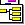

| Page Manager | DISCUS Administration Instructions |
The Page Manager is the most frequently used interface once discussion begins. It gives moderators the ability to manipulate past, present, and future discussions by allowing the configuration of subtopics, about messages, and messages on the pages.
To access the Page Manager, click on "Page Manager" from the administration program main menu. Note that, by default, the first screen from the Page Manager is loaded into the right frame upon accessing the administration program. To begin editing a topic, click on the topic that you wish to edit from the "Page Manager" page.
There are a number of methods by which a moderator can navigate through the Page Manager.
Moderators can specify one "Announcement message" on each page. This message is displayed before all subtopics on the page, so it is the first thing that visitors to your page will notice. Announcement messages are ideal for time-sensitive or critical announcements. Note that About messages can be specified, which appear below the list of subtopics.
To use an announcement message, you must first enable the "Announcement Message" option in the page layout (see Page layout for details). Note that announcement messages are not enabled by default.
The text of an announcement message is specified in the text box under "Announcement Message." In an announcement message, you may use any formatting tags except image uploading. To enter (or change) an announcement message, use the text box to enter your message. Then, click on the "Preview/Save Message" button.
If your announcement message has formatting errors, you will be given an error message and will not have the option to save the message. If your announcement message is free from formatting errors, a preview of your about message will be displayed in a table. You have the option to revise the announcement message (by typing into the text box and then clicking on "Refresh Preview" to see your changes) or to save your announcement message by clicking on "Save Message." You may cancel your editing by using the navigation bar on the top of the page to return to the subtopic you were editing.
Moderators have several options dealing with subtopics. Moderators can delete, move, rename, reorder, or add subtopics from the administration interface. In addition, moderators can create a "subtopic" that is actually a link to a document somewhere on the WWW but not within the discussion board; this is useful for providing static information.
Click on the delete icon ( ) next to the subtopic you wish to delete. You may also use the check boxes in the "Mark" column to select the subtopics you wish to delete, and then click on the delete icon in the "(Marked)" row. You must click on "OK" to confirm the deletion of a subtopic.
WARNING! If you delete a subtopic, the contents of the deleted page will be permanently lost; in addition, any subtopics of the deleted subtopic will be recursively deleted.
) next to the subtopic you wish to delete. You may also use the check boxes in the "Mark" column to select the subtopics you wish to delete, and then click on the delete icon in the "(Marked)" row. You must click on "OK" to confirm the deletion of a subtopic.
WARNING! If you delete a subtopic, the contents of the deleted page will be permanently lost; in addition, any subtopics of the deleted subtopic will be recursively deleted.
Click on the move icon () next to the subtopic you wish to move. You may also use the check boxes in the "Mark" column to select the subtopics you wish to move, and then click on the move icon in the "(Marked)" row. Then you are presented with a tree of possible destinations for the subtopic page. Valid destinations are indicated with a folder icon (); to select a destination, click on the folder icon. You cannot move a page onto itself or one of its children (i.e., a child cannot be its own parent); invalid destinations are indicated with an X-out folder icon (), and clicking on such an icon has no effect. Note that all subtopics of the moved subtopic are recursively moved to preserve the subtopic structure. If that page does not already have subtopics enabled, they will be enabled by the move operation.
Click on the properties icon () next to the subtopic or link for which you wish to change properties. For ordinary subtopics, the only property you can change is the name of the subtopic. For links, you can change the name of the link, the URL that the link points to, and the window in which the link will be displayed. To save changes, click on the "Save Properties" button.
Enter numbers corresponding to the new order for the subtopics (lower numbers will move subtopics higher in the list). You may use decimals or negative numbers for convenience. To impose your new order, click on the reorder icon (). Clicking the Reverse link under the reorder icon reverses all of the numbers in the list by multiplying each number by (-1); clicking this a second time undoes the operation. Clicking the A-Z link puts all topics in alphabetical order. Clicking the Z-A link puts all topics in alphabetical order. You must still click on the reorder icon after clicking any of the three shortcut links to apply your new order to the page.
Enter the name for the subtopic in the "Name:" text entry box under "Add a Subtopic." Then, select the type of subtopic you wish to add using the radio selection buttons below the name.
You can add the subtopic as another discussion board page by selecting "New discussion page." If you do this, you must also specify the page layout by selecting any of the three options given (see Page layout for details). Note that the page layout can be changed later without losing any subtopics or messages that may be created. If the "Edit new subtopic once created" box is checked, upon creating the new page, you will automatically be directed into that new page to edit it, which is useful if you are only creating one page. If you uncheck that box, upon creating the new page, you will remain in the page you were editing, which is useful if you are creating more than one subtopic from the same page.
You can also add the subtopic as a link to a document somewhere else on the WWW (in which case it will not be added as a new discussion page). To do this, select "Link to external document" and then type the URL that the "subtopic" should point to. You must also specify whether the linked document will appear in the right frame, the top frame (replacing the board frameset), or a new browser window by selecting the appropriate option.
To finish adding any subtopic, click on "Add this Subtopic."
Moderators can specify one "About message" on each page. This message is displayed after all subtopics but before all messages; this is a way for a moderator to have control over the "first message" on a page. About messages are useful for giving a few lines of text describing the discussion that is expected to occur. Note that Announcement messages can be specified, which appear above the list of subtopics.
To use an about message, you must first enable the "About Message" option in the page layout (see Page layout for details). Note that about messages are not enabled by default.
The text of an about message is specified in the text box under "About Message." In an about message, you may use any formatting tags except image uploading. To enter (or change) an about message, use the text box to enter your message. Then, click on the "Preview/Save Message" button.
If your about message has formatting errors, you will be given an error message and will not have the option to save the message. If your about message is free from formatting errors, a preview of your about message will be displayed in a table. You have the option to revise the about message (by typing into the text box and then clicking on "Refresh Preview" to see your changes) or to save your about message by clicking on "Save Message." You may cancel your editing by using the navigation bar on the top of the page to return to the subtopic you were editing.
Messages posted by users are key to the discussions. Moderators are given tools to delete, edit, reorder, or move existing messages or to add new messages.
Click on the delete icon ( ) next to the message you wish to delete. You may also use the check boxes in the "Mark" column to select the messages you wish to delete, and then click on the delete icon in the "(Marked)" row. You must click on "OK" to confirm the deletion of a message.
WARNING! If you delete a message, the contents of the message will be permanently removed, along with any images that were uploaded to the server contained within that message.
) next to the message you wish to delete. You may also use the check boxes in the "Mark" column to select the messages you wish to delete, and then click on the delete icon in the "(Marked)" row. You must click on "OK" to confirm the deletion of a message.
WARNING! If you delete a message, the contents of the message will be permanently removed, along with any images that were uploaded to the server contained within that message.
Click on the move icon () next to the message you wish to move. You may also use the check boxes in the "Mark" column to select the messages you wish to move, and then click on the move icon in the "(Marked)" row. Then you are presented with a tree of possible destinations for the subtopic page. Valid destinations are indicated with a folder icon (); to select a destination, click on the folder icon. The message will be added to the end of the message list on the page you select. If that page does not already have messages enabled, they will be enabled by the move operation.
Click on the edit icon ( ) next to the message you wish to edit. You are then presented with a form to edit the message that closely resembles the message preview screen when posting a message. Edit the message as desired by changing the text in the text entry box. When you have made changes, you can preview your changes using the "Refresh Preview" button. When your changes are complete, click on "Save Message" to save the changes. WARNING! When you edit a message, a comment tag will be included on the actual message page that indicates your username and the time you edited the message. You cannot remove this comment tag using the administration program.
) next to the message you wish to edit. You are then presented with a form to edit the message that closely resembles the message preview screen when posting a message. Edit the message as desired by changing the text in the text entry box. When you have made changes, you can preview your changes using the "Refresh Preview" button. When your changes are complete, click on "Save Message" to save the changes. WARNING! When you edit a message, a comment tag will be included on the actual message page that indicates your username and the time you edited the message. You cannot remove this comment tag using the administration program.
Enter numbers corresponding to the new order for the messages (lower numbers will move messages higher in the list). You may use decimals or negative numbers for convenience. To impose your new order, click on the reorder icon ().
Click the view icon () next to the message you wish to view. The message you are viewing will be displayed in a form that closely resembles the message preview screen when posting a message. You will not be able to edit the message from this screen (to edit a message, see "Editing a message" above).
Click the information icon ( ) next to the message for which you wish to view the information. The username and group of the person who posted the message and the IP address of the computer used to post the message will be displayed.
) next to the message for which you wish to view the information. The username and group of the person who posted the message and the IP address of the computer used to post the message will be displayed.
You can add a message to any discussion that has messages enabled from within the administration program, whether or not there is an "Add a Message" form on the page itself. To add a message, enter the text of your message (along with any formatting tags, if appropriate) into the text entry box under "Add a Message." Then click on "Preview/Post Message." Note that your moderator username and password is automatically used, but you can post as "Anonymous" by checking the appropriate box. Posting the message follows the same procedure as posting a message from within the user interface.
Moderators have control over the layout of each page and can specify which "discussion elements" appear on each page. Possible "discussion elements" include an announcement message, a list of subtopics, a "create new conversation" button, an about message, messages, and an "Add a Message" form. Although the moderator can technically specify the arrangement in 26=64 ways, some combinations do not make sense (such as an "Add a Message" form with no messages). Also, many beginners enable all six discussion elements, but this is unattractive within the board unless there are actually an "Announcement Message, "subtopics, an "About Message," and messages on the page, which is very rare.
The page layout is specified by selecting elements to be displayed in the page layout selection table. To include a particular element on a page, check the checkbox next to the appropriate element. When the desired elements have been selected, click on the "Save Page Layout" button to finalize the layout.
There are also three common layouts defined in the page layout selection table. Checking the radio button next to any of these three common layouts automatically updates the discussion elements column. You may also define a custom layout by manually checking or un-checking discussion elements.
When you deactivate a discussion element, the discussion element is hidden on the page by being commented out. Thus, you can deactivate an element and later activate that same element and not lose any of the information that was contained in that element (you can turn the messages off, for example, and later turn the messages on, and none of the messages would have been deleted).
WARNING! Hidden elements are visible to anyone who looks at the source of the page. Therefore, you should not, for example, tell everyone to add their desired username and password in an "Add a Message" form because the messages will be hidden -- anyone looking at the source of the page can see all of the messages that were posted.
| Copyright © 2000, DiscusWare, LLC, all rights reserved |